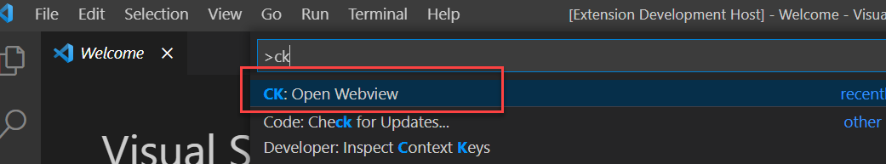
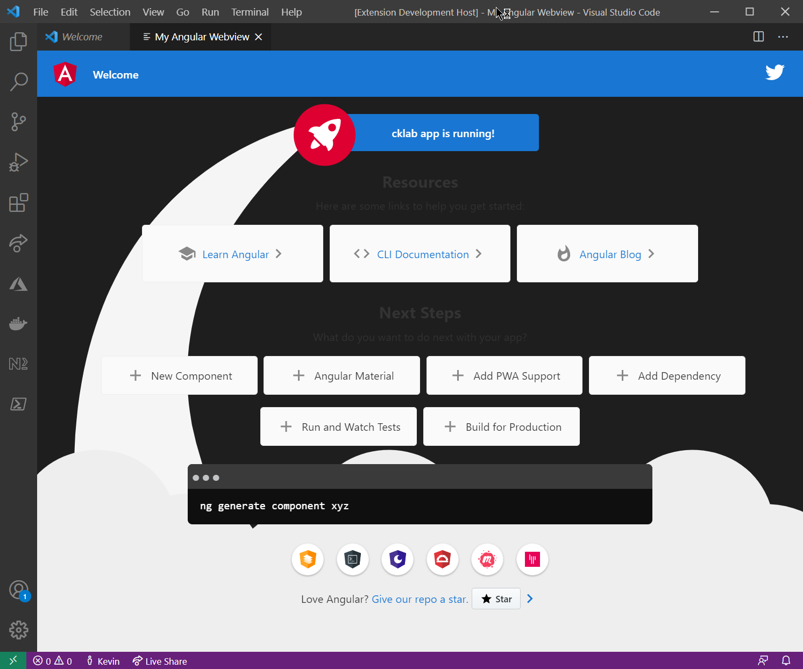

前幾天我分享了一個 YouTube 的影片，該影片大致上的內容是如何使用 VSCode Extension 使用 Webview API，既然可以用 webview 的方式來呈現網頁，那顯示一個 Angular App 也是很正常的事情，但環境設定上要怎麼調整呢? 這篇筆記就來整理一下
環境設定
-
首先先建立一個 Angular 的專案 (這應該不用講要用什麼指令了吧)
-
打開
package.json，新增以下內容1
2
3
4
5
6
7
8
9
10
11
12
13
14
15
16
17
18
19
20
21
22
23
24"publisher": "publisher-name",
"engines": {
"vscode": "^1.53.0"
},
"categories": [
"Other"
],
"activationEvents": [
"onCommand:angular-webview.start"
],
"main": "./dist/ext-src/extension.js",
"contributes": {
"commands": [
{
"command": "angular-webview.start",
"title": "Open Webview",
"category": "CK"
}
]
},
"repository": {
"type": "git",
"url": "#"
}categories、activationEvents、contributes的區塊內容請配合 VS Code Extension 開發規範做調整
1
2
3
4
5
6"devDependencies": {
...
"@types/vscode": "^1.53.0",
"vscode-test": "^1.5.0",
"vsce": "^1.83.0"
}- 修改完後記得要執行
npm install
1
2
3
4
5
6
7
8"scripts": {
...
// 修改
"build": "ng build --prod --output-hashing none && tsc -p tsconfig.extension.json",
// 新增指令
"package": "vsce package",
"vscode:prepublish": "npm run build && tsc -p tsconfig.extension.json"
}, -
新增
.vscodeignore檔案 (可根據狀況調整)1
2
3
4
5
6
7*
!dist
.vscode
e2e
ext-src
node_modules
src -
新增
.vscode資料夾並新增launch.json檔案1
2
3
4
5
6
7
8
9
10
11
12
13
14
15
16{
"version": "0.2.0",
"configurations": [
{
"name": "Run Extension",
"type": "extensionHost",
"request": "launch",
"args": [
"--extensionDevelopmentPath=${workspaceFolder}"
],
"outFiles": [
"${workspaceFolder}/out/**/*.js"
],
},
]
} -
新增
ext-src資料夾，並在該資料夾下新增extension.ts檔案1
2
3
4
5
6
7
8
9
10
11
12
13
14
15
16
17
18
19
20
21
22
23
24
25
26
27
28
29
30
31
32
33
34
35
36
37
38
39
40
41
42
43
44
45
46
47
48
49
50
51
52
53
54
55
56
57
58
59
60
61
62
63
64
65
66
67
68
69
70
71
72
73
74
75
76
77
78
79
80
81
82
83
84
85
86
87
88
89
90
91
92
93
94
95
96
97
98
99
100
101
102
103
104
105
106
107
108
109
110
111
112
113
114
115
116
117
118
119
120
121
122
123
124
125
126
127
128
129
130
131
132
133
134
135
136
137
138
139
140
141
142
143
144
145
146import * as fs from 'fs';
import * as path from 'path';
import * as vscode from 'vscode';
/**
* Manages webview panels
*/
class WebPanel {
/**
* Track the currently panel. Only allow a single panel to exist at a time.
*/
public static currentPanel: WebPanel | undefined;
private static readonly viewType = 'angular';
private readonly panel: vscode.WebviewPanel;
private readonly extensionPath: string;
private readonly builtAppFolder: string;
private disposables: vscode.Disposable[] = [];
public static createOrShow(
extensionPath: string,
context: vscode.ExtensionContext
) {
const column = vscode.window.activeTextEditor
? vscode.window.activeTextEditor.viewColumn
: undefined;
// If we already have a panel, show it.
// Otherwise, create angular panel.
if (WebPanel.currentPanel) {
WebPanel.currentPanel.panel.reveal(column);
} else {
WebPanel.currentPanel = new WebPanel(
extensionPath,
column || vscode.ViewColumn.One,
context
);
}
return WebPanel.currentPanel;
}
private constructor(
extensionPath: string,
column: vscode.ViewColumn,
context: vscode.ExtensionContext
) {
this.extensionPath = extensionPath;
this.builtAppFolder = 'dist/cklab';
// Create and show a new webview panel
this.panel = vscode.window.createWebviewPanel(
WebPanel.viewType,
'My Angular Webview',
column,
{
// Enable javascript in the webview
enableScripts: true,
// And restrict the webview to only loading content from our extension's `media` directory.
localResourceRoots: [
vscode.Uri.file(path.join(this.extensionPath, this.builtAppFolder)),
],
}
);
// Set the webview's initial html content
this.panel.webview.html = this._getHtmlForWebview(context);
// Listen for when the panel is disposed
// This happens when the user closes the panel or when the panel is closed programatically
this.panel.onDidDispose(() => this.dispose(), null, this.disposables);
// Handle messages from the webview
this.panel.webview.onDidReceiveMessage(
(message: any) => {
switch (message.command) {
case 'alert':
vscode.window.showErrorMessage(message.text);
return;
}
},
null,
this.disposables
);
}
public dispose() {
WebPanel.currentPanel = undefined;
// Clean up our resources
this.panel.dispose();
while (this.disposables.length) {
const x = this.disposables.pop();
if (x) {
x.dispose();
}
}
}
/**
* Returns html of the start page (index.html)
*/
private _getHtmlForWebview(context: vscode.ExtensionContext) {
// path to dist folder
const appDistPath = path.join(this.extensionPath, this.builtAppFolder);
// get path to index.html file from dist folder
const indexPath = path.join(appDistPath, 'index.html');
// read index file from file system
let indexHtml = fs.readFileSync(indexPath, { encoding: 'utf8' });
// 1. Get all link prefixed by href or src
const matchLinks = /(href|src)="([^"]*)"/g;
// 2. Transform the result of the regex into a vscode's URI format
const toUri = (_: string, prefix: 'href' | 'src', link: string) => {
// For <base href="#" />
if (link === '#') {
return `${prefix}="${link}"`;
}
// For scripts & links
const _path = path.join(appDistPath, link);
const uri = vscode.Uri.file(_path);
return `${prefix}="${this.panel.webview['asWebviewUri'](uri)}"`;
};
// update the base URI tag
indexHtml = indexHtml.replace(matchLinks, toUri);
return indexHtml;
}
}
export function activate(context: vscode.ExtensionContext) {
context.subscriptions.push(
vscode.commands.registerCommand('angular-webview.start', () => {
WebPanel.createOrShow(context.extensionPath, context);
})
);
}
// this method is called when your extension is deactivated
export function deactivate() {}- line 49: 請根據自己 Angular 專案輸出資料夾路徑做調整
- line 138: 跟著
package.json的指令註冊一起調整命令名稱
-
新增
tsconfig.extension.json檔案1
2
3
4
5
6
7
8
9
10
11
12
13
14
15
16
17
18
19
20
21{
"compilerOptions": {
"module": "commonjs",
"target": "es6",
"outDir": "dist",
"lib": [
"es6",
"dom"
],
"sourceMap": true,
"rootDir": ".",
"strict": true
},
"include": [
"ext-src"
],
"exclude": [
"node_modules/*",
".vscode/*"
]
}
到這邊應算是完成最基本的 VS Code Extension 環境的設定，如何看是否有設定成功，可以執行以下步驟
-
開 Terminal 執行
npm run build -
按 F5 進入 Debug 模式，這時候會開啟一個新的 VS Code 視窗
-
執行所設定的啟動指令，以這個範例來說就是
CK: Open Webview
-
成功後的顯示畫面

至於在 VS Code Webview 的環境下，Angular 開發上有什麼需要注意的事項，這部分就留到下一篇筆記了
打包套件
如果都寫完要發布成可以安裝的擴充套件時，可以執行 npm run package 就會產生一個 VSIX 的安裝檔案